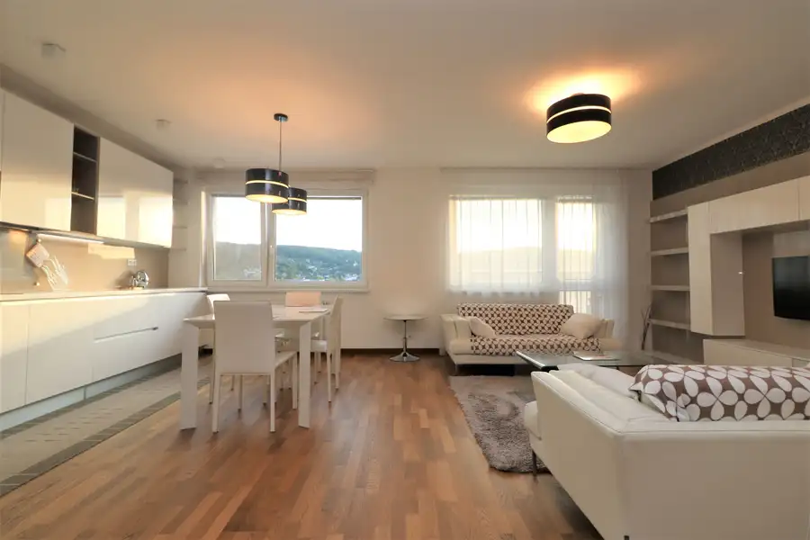
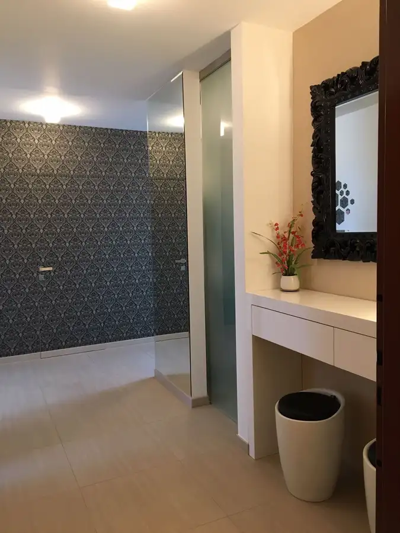
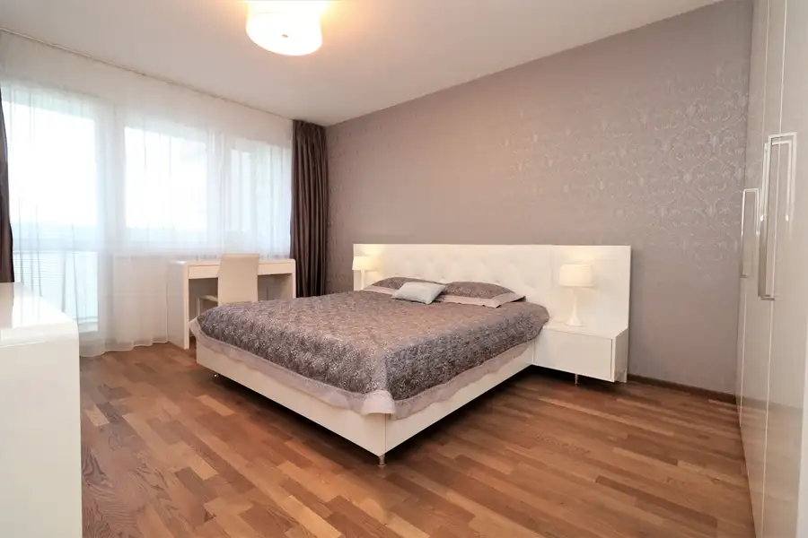
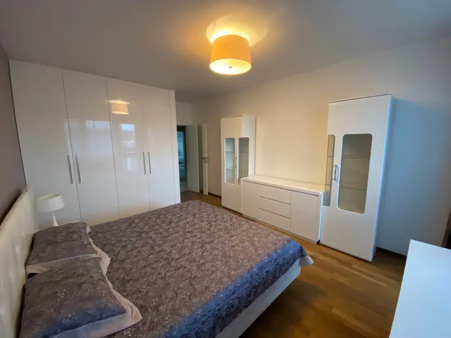
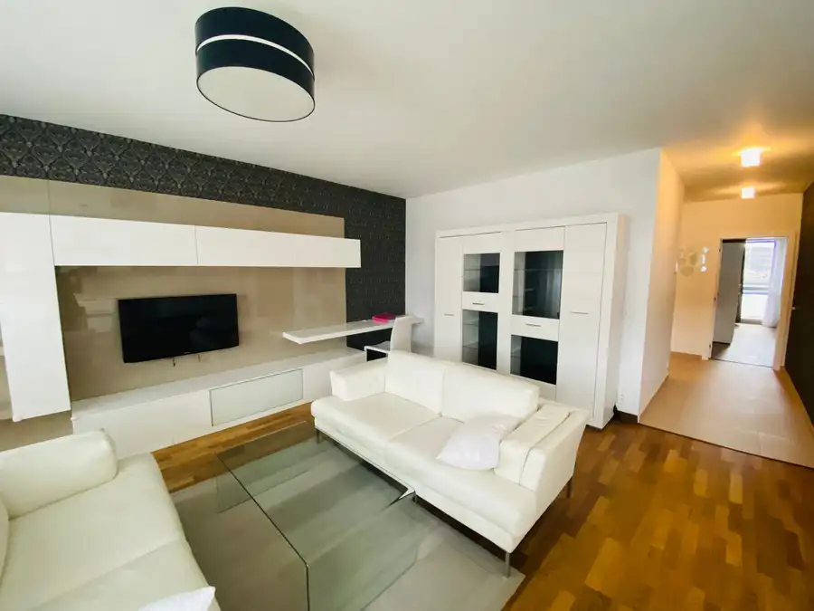

PREDAJ, priestranný 3 izbový byt s krásnym výhľadom s dvomi balkónmi na Saratovskej ulici
Dúbravka, Bratislava





- Dispozícia3-izbový
- Plocha110 m²
- Poschodie7. z 13
- StavNovostavba
O nehnuteľnosti
Ponúkame Vám na predaj nadštandardný, priestranný a kompletne zariadený 3-izbový byt v modernom rezidenčnom projekte Dom Rustica na Saratovskej ulici v Bratislave – Dúbravke, priamo oproti British International School.Úžitková plocha bytu – 110 m²Poschodie – 7/13Orientácia – západná a východnáVýťah – ánoBalkóny – 2Parkovacie státie – za príplatokStav – kompletne zariadený a pripravený na okamžité bývanieDISPOZÍCIA BYTU:Vstupom do bytu sa dostaneme do priestrannej predsiene, z ktorej sa prechádza do jednotlivých miestností.Dennú časť tvorí veľká obývacia izba prepojená s kuchyňou. Byt ďalej disponuje dvoma samostatnými spálňami, kúpeľňou vybavenou vaňou aj sprchovacím kútom a samostatným WC.Súčasťou bytu sú dva balkóny, ktoré poskytujú príjemný vonkajší priestor.VYBAVENIE BYTU:Byt sa predáva kompletne zariadený kvalitným nábytkom. Kuchyňa je vybavená vstavanými elektrospotrebičmi značky Siemens.K vybaveniu patrí aj práčka a prakticky riešený úložný priestor. Byt je pripravený na okamžité nasťahovanie bez potreby ďalších investícií.BENEFITY:- nadštandardná výmera 110 m²- dve samostatné spálne- priestranná obývacia izba prepojená s kuchyňou- dva balkóny- západná orientácia- kúpeľňa s vaňou aj sprchovacím kútom- samostatné WC- kvalitný nábytok- vstavané elektrospotrebiče Siemens- práčka- praktický úložný priestor- byt pripravený na okamžité bývanie- British International School priamo oproti bytovému domu- kompletná občianska vybavenosť- výborné napojenie na diaľničný obchvatBYTOVÝ DOM:Byt sa nachádza na 7. poschodí z 13 v modernom rezidenčnom projekte Dom Rustica. Bytový dom je vybavený výťahom a nachádza sa vo vyhľadávanej časti Bratislavy – Dúbravke.LOKALITA:Dom Rustica sa nachádza na Saratovskej ulici, priamo oproti British International School, ktorá je dostupná pešo.V okolí sa nachádzajú parky, detské ihriská, športové centrá, obchody, reštaurácie a kultúrne centrum. Lokalita ponúka kompletnú občiansku vybavenosť a výborné napojenie na diaľničný obchvat.Ide o kvalitné bývanie vo výbornej lokalite, ktoré spája dostatok priestoru, komfort a praktickú dostupnosť všetkých potrebných služieb.K bytu možnosť dokúpiť parkovacie miesto v podzemnej garáži v hodnote 25 000,- Eur.Cena bytu - 499 950,-Eur je vrátane provízie pre RK, v ktorej je zabezpečený kompletný právny servis súvisiaci s predajom nehnuteľnosti. Možnosť bezplatného zabezpečenia hypotekárneho špecialistu.+421 903 053 474kalamen@dconsult.sk
Parametre
- Cena vrátane energií
- Nie
- Druh
- 3 izbový byt
- Dátum zverejnenia
- 16. 08. 2026
- Energetický certifikát budovy
- nie je
- Orientácia
- Západná, Východná
- Podlažie
- 7
- Počet balkónov
- 2
- Počet izieb / miestností
- 3
- Počet nadzemných podlaží
- 13
- Počet parkovacích miest v garáži
- 1
- Počet spální
- 2
- Rok kolaudácie
- 2009
- Stav nehnuteľnosti
- Novostavba
- Typ
- Predaj
- Typ konštrukcie
- Zmiešaná
- Vybavenie
- Balkón, Garážové státie, Výťah
- Vybavenie objektu
- Zariadený so spotrebičmi
- Úžitková plocha
- 110 m²